12 Additional GLM topics
As you can tell, PA has a lot of small topics related to GLMs. This chapter completes some of the residual (no pun intended) topics.
12.1 Residuals
Learning from mistakes is the path to improvement. For GLMs, the residual analysis looks for patterns in the errors to find ways of improving the model.
12.1.1 Raw residuals
The word “residual” by itself means the “raw residual” in GLM language. This is the difference in actual vs. predicted values.
\[\text{Raw Residual} = y_i - \hat{y_i}\]
12.1.2 Deviance residuals
This is not meant for GLMs with non-Gaussian distributions. To adjust for other distributions, we need the concept of deviance residuals.
Deviance is a way of assessing the adequacy of a model by comparing it with a more general model with the maximum number of parameters that can be estimated. It is referred to as the saturated model and it has one parameter per observation.
The deviance assesses the goodness of fit for the model by looking at the difference between the log-likelihood functions of the saturated model and the model under investigation, i.e. \(l(b_{sat},y) - l(b,y)\). Here sat \(b_{sat}\) denotes the maximum likelihood estimator of the parameter vector of the saturated model, \(\beta_{sat}\) , and \(b\) is the maximum likelihood estimator of the parameters of the model under investigation, \(\beta\). The maximum likelihood estimator is the estimator that maximizes the likelihood function. The deviance is defined as
\[D = 2[l(b_{sat},y) - l(b,y)]\]
The deviance residual uses the deviance of the ith observation \(d_i\) and then takes the square root and applies the same sign (aka, the + or - part) of the raw residual.
\[\text{Deviance Residual} = \text{sign}(y_i - \hat{y_i})\sqrt{d_i}\]
12.2 Example
Just as with OLS, there is a formula and data argument. In addition, we need to specify the target distribution and link function.
model = glm(formula = charges ~ age + sex + smoker,
family = Gamma(link = "log"),
data = health_insurance)We see that age, sex, and smoker are all significant (p <0.01). Reading off the coefficient signs, we see that claims
- Increase as age increases
- Are higher for women
- Are higher for smokers
model %>% tidy()## # A tibble: 4 × 5
## term estimate std.error statistic p.value
## <chr> <dbl> <dbl> <dbl> <dbl>
## 1 (Intercept) 7.82 0.0600 130. 0
## 2 age 0.0290 0.00134 21.6 3.40e- 89
## 3 sexmale -0.0468 0.0377 -1.24 2.15e- 1
## 4 smokeryes 1.50 0.0467 32.1 3.25e-168Below you can see graph of deviance residuals vs. the predicted values.
If this were a perfect model, all of these below assumptions would be met:
- Scattered around zero?
- Constant variance?
- No obvious pattern?
plot(model, which = 3)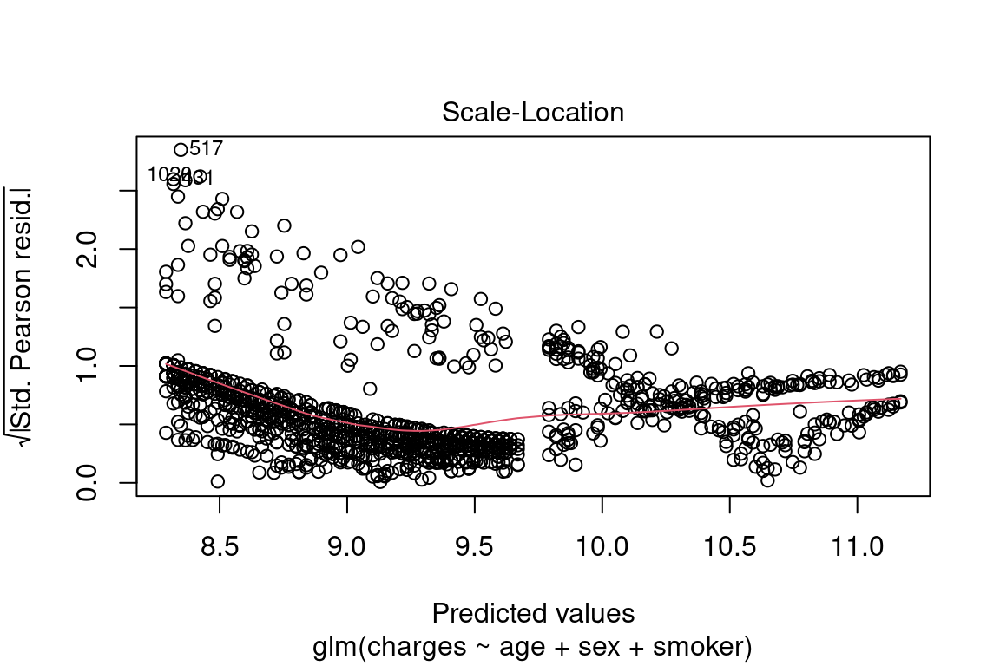
The quantile-quantile (QQ) plot shows the quantiles of the deviance residuals (i.e., after adjusting for the Gamma distribution) against theoretical Gaussian quantiles.
In a perfect model, all of these assumptions would be met:
- Points lie on a straight line?
- Tails are not significantly above or below line? Some tail deviation is ok.
- No sudden “jumps?” This indicates many \(Y\)’s which have the same value, such as insurance claims which all have the exact value of $100.00 or $0.00.
plot(model, which = 2)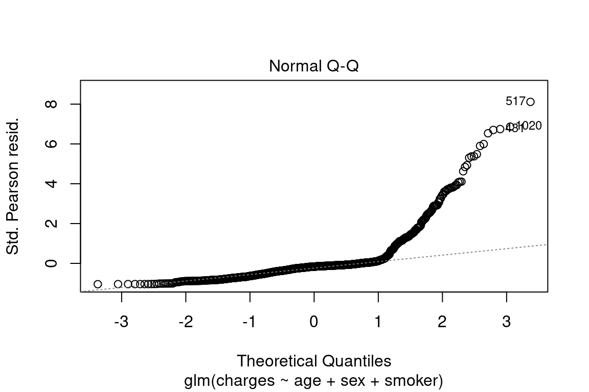
12.3 Log transforms of predictors
When a log link is used, taking the natural logs of continuous variables allows for the scale of each predictor to match the scale of the thing that they are predicting, the log of the mean of the response. In addition, when the distribution of the continuous variable is skewed, taking the log helps to make it more symmetric.
For \(\mu\) the mean response,
\[log(\mu) = \beta_0 + \beta_1 log(X)\] To solve for \(\mu\), take the exponent of both sides
\[\mu = e^{\beta_1} e^{\beta_1 log(X)} = e^{\beta_0} X^{\beta_1}\]
12.4 Example
In the Hospital Readmission sample project, one of the predictor variables, “Length of stay,” is the number of days since a person has been readmitted to the hospital. You can tell that it is right-skewd because the median is higher than the mean.
summary(readmission$LOS)## Min. 1st Qu. Median Mean 3rd Qu. Max.
## 1.000 3.000 5.000 6.693 8.000 36.000But it could also be thought of as a discrete variable because it only takes on 36 values. Should you still apply a log transform?
readmission %>% count(LOS)## # A tibble: 36 × 2
## LOS n
## <dbl> <int>
## 1 1 986
## 2 2 7646
## 3 3 9775
## 4 4 11325
## 5 5 8365
## 6 6 6020
## 7 7 4600
## 8 8 3534
## 9 9 2719
## 10 10 1997
## # … with 26 more rowsHere are the histograms
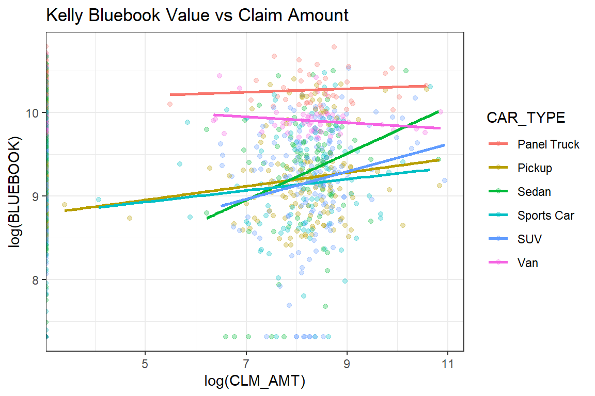
Yes, the SOA’s solution applys the log transform.
12.5 Reference levels
When a categorical variable is used in a GLM, the model actually uses indicator variables for each level. The default reference level is the order of the R factors. For the sex variable, the order is female and then male. This means that the base level is female by default.
health_insurance$sex %>% as.factor() %>% levels()## [1] "female" "male"Why does this matter? Statistically, the coefficients are most stable when there are more observations.
health_insurance$sex %>% as.factor() %>% summary()## female male
## 662 676There is already a function to do this in the tidyverse called fct_infreq. Let’s quickly fix the sex column so that these factor levels are in order of frequency.
health_insurance <- health_insurance %>%
mutate(sex = fct_infreq(sex))Now male is the base level.
health_insurance$sex %>% as.factor() %>% levels()## [1] "male" "female"12.6 Interactions
An interaction occurs when the effect of a variable on the response is different depending on the level of other variables in the model.
Consider this model:
Let \(x_2\) be an indicator variable, which is 1 for some observations and 0 otherwise.
\[\hat{y_i} = \beta_0 + \beta_1 x_1 + \beta_2 x_2 + \beta_3 x_1 x_2\]
There are now two different linear models depending on whether x_1 is 0 or 1.
When \(x_1 = 0\),
\[\hat{y_i} = \beta_0 + \beta_2 x_2\]
and when \(x_1 = 1\)
\[\hat{y_i} = \beta_0 + \beta_1 + \beta_2 x_2 + \beta_3 x_2\] By rewriting this we can see that the intercept changes from \(\beta_0\) to \(\beta_0^*\) and the slope changes from \(\beta_1\) to \(\beta_1^*\)
\[
(\beta_0 + \beta_1) + (\beta_2 + \beta_3 ) x_2 \\
= \beta_0^* + \beta_1^* x_2
\]
Here is an example from the auto_claim data. The lines show the slope of a linear model, assuming that only BLUEBOOK and CAR_TYPE were predictors in the model. You can see that the slope for Sedans and Sports Cars is higher than for Vans and Panel Trucks.
auto_claim %>%
sample_frac(0.2) %>%
ggplot(aes(log(CLM_AMT), log(BLUEBOOK), color = CAR_TYPE)) +
geom_point(alpha = 0.3) +
geom_smooth(method = "lm", se = F) +
labs(title = "Kelly Bluebook Value vs Claim Amount")## `geom_smooth()` using formula 'y ~ x'Figure 12.1: Example of strong interaction
Any time that effect of one variable on the response is different depending on the value of other variables, we say that there is an interaction. We can also use a hypothesis test with a GLM to check this. Simply include an interaction term and see if the coefficient is zero at the desired significance level.
12.7 Offsets
In certain situations, it is convenient to include a constant term in the linear predictor. This is the same as including a variable that has a coefficient equal to 1. We call this an offset.
\[g(\mu) = \beta_0 + \beta_1 X_1 + ... + \beta_p X_p + \text{offset}\] On Exam PA, offsets will only be used for one special case:
- With Poisson regression
- With a log link function
- As a measure of exposure (usually length of policy period)
While it is technically possible to use offsets in other ways, this is not likely to appear on PA.
If modeling the spread of COVID, the exposure would be the number of people exposed to the virus and the response would be the number of people infected.
In auto insurance, the exposure might be the number of months of coverage, and the response would be the claims incurred. Consider a very simple model which only uses the year that the car was manufactured as a predictor. This expected value of the claims, the target variable, would be
\[log(E[\frac{\text{Claims}}{\text{Months}}]) = \beta_0 + \beta_1 \text{Year}\] Then you can use the property of the log where \(log(\frac{A}{B}) = log(A) - log(B)\) to move things around. Because \(\text{Months}\) is known, you can remove the expected value. This is the offset term.
\[log(E[\text{Claims}]) = \beta_0 + \beta_1 \text{Year} + \text{Months}\]
12.8 Tweedie regression
While this topic is briefly mentioned in the modules, the only R libraries which support Tweedie Regression (statmod and tweedie) are not on the syllabus, and so there is no way that the SOA could ask you to build a tweedie model. This means that you can safely skip this section.
12.9 Combinations of Link Functions and Target Distributions
What is an example of when to use a log link with a Gaussian response? What about a Gamma family with an inverse link? What about an inverse
Gaussian response and an inverse square link? As these questions illustrate, there are many combinations of link and response families. In the real world, a model never fits perfectly, and so often, these choices come down to the judgment of the modeler - which model is the best fit and meets the business objectives?
However, there is one way that we can know for certain which link and response family is the best, and that is if we generate the data ourselves.
Recall that a GLM has two parts:
A random component: \(Y|X \sim \text{some exponential family distribution}\)
A link function: between the random component and the covariates: \(g(\mu(X)) = X\beta\) where \(\mu = E[Y|X]\)
Following this recipe, we can simulate data from any combination of link function and response family. This helps us to understand the GLM framework very clearly.
12.9.1 Gaussian Response with Log Link
We create a function that takes in data \(x\) and returns a Gaussian random variable that has mean equal to the inverse link, which in the case of a log link is the exponent. We add 10 to \(x\) so that the values will always be positive, as will be described later on.
sim_norm <- function(x) {
rnorm(1, mean = exp(10 + x), sd = 1)
}The values of \(X\) do not need to be normal. The above assumption is merely that the mean of the response \(Y\) is related to \(X\) through the link function, mean = exp(10 + x), and that the distribution is normal. This has been accomplished with rnorm already. For illustration, here we use \(X\)’s from a uniform distribution.
data <- tibble(x = runif(500)) %>%
mutate(y = x %>% map_dbl(sim_norm))We already know what the answer is: a Gaussian response with a log link. We fit a GLM and see a perfect fit.
glm <- glm(y ~ x, family = gaussian(link = "log"), data = data)
summary(glm)##
## Call:
## glm(formula = y ~ x, family = gaussian(link = "log"), data = data)
##
## Deviance Residuals:
## Min 1Q Median 3Q Max
## -3.05488 -0.73818 -0.01268 0.71014 2.93377
##
## Coefficients:
## Estimate Std. Error t value Pr(>|t|)
## (Intercept) 1.000e+01 2.981e-06 3354536 <2e-16 ***
## x 1.000e+00 4.383e-06 228152 <2e-16 ***
## ---
## Signif. codes: 0 '***' 0.001 '**' 0.01 '*' 0.05 '.' 0.1 ' ' 1
##
## (Dispersion parameter for gaussian family taken to be 1.061249)
##
## Null deviance: 5.817e+10 on 499 degrees of freedom
## Residual deviance: 5.285e+02 on 498 degrees of freedom
## AIC: 1452.7
##
## Number of Fisher Scoring iterations: 2par(mfrow = c(2,2))
plot(glm, cex = 0.4)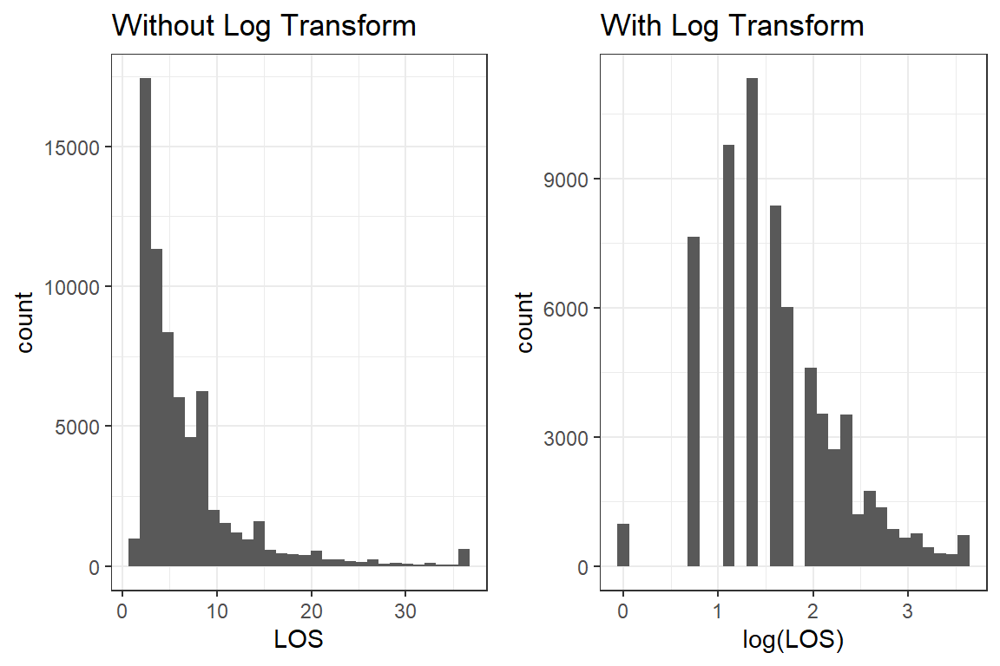
12.9.2 Gaussian Response with Inverse Link
The same steps are repeated except the link function is now the inverse, mean = 1/x. We see that some values of \(Y\) are negative, which is ok.
sim_norm <- function(x) {
rnorm(1, mean = 1/x, 1)
}
data <- tibble(x = runif(500)) %>%
mutate(y = x %>% map_dbl(sim_norm))
summary(data)## x y
## Min. :0.002351 Min. : -1.392
## 1st Qu.:0.278258 1st Qu.: 1.149
## Median :0.528553 Median : 2.287
## Mean :0.509957 Mean : 6.875
## 3rd Qu.:0.760526 3rd Qu.: 4.014
## Max. :0.999992 Max. :425.760glm <- glm(y ~ x, family = gaussian(link = "inverse"), data = data)
summary(glm)##
## Call:
## glm(formula = y ~ x, family = gaussian(link = "inverse"), data = data)
##
## Deviance Residuals:
## Min 1Q Median 3Q Max
## -3.11464 -0.77276 -0.02954 0.70110 2.50767
##
## Coefficients:
## Estimate Std. Error t value Pr(>|t|)
## (Intercept) 1.605e-06 1.238e-05 0.13 0.897
## x 9.983e-01 4.032e-03 247.58 <2e-16 ***
## ---
## Signif. codes: 0 '***' 0.001 '**' 0.01 '*' 0.05 '.' 0.1 ' ' 1
##
## (Dispersion parameter for gaussian family taken to be 1.080454)
##
## Null deviance: 383534.20 on 499 degrees of freedom
## Residual deviance: 538.07 on 498 degrees of freedom
## AIC: 1461.6
##
## Number of Fisher Scoring iterations: 4par(mfrow = c(2,2))
plot(glm, cex = 0.4)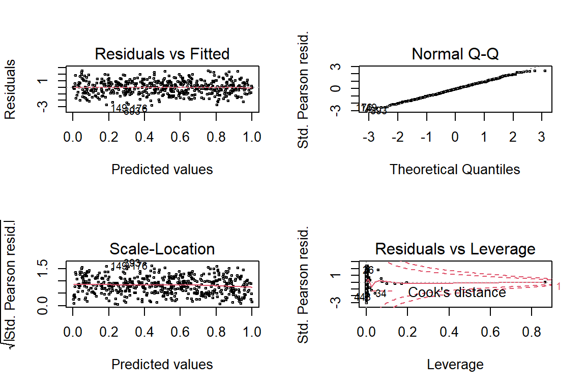
12.9.3 Gaussian Response with Identity Link
And now the link is the identity, mean = x.
sim_norm <- function(x) {
rnorm(1, mean = x, 1)
}
data <- tibble(x = rnorm(500)) %>%
mutate(y = x %>% map_dbl(sim_norm))
glm <- glm(y ~ x, family = gaussian(link = "identity"), data = data)
summary(glm)##
## Call:
## glm(formula = y ~ x, family = gaussian(link = "identity"), data = data)
##
## Deviance Residuals:
## Min 1Q Median 3Q Max
## -2.8731 -0.6460 0.0225 0.6519 3.3242
##
## Coefficients:
## Estimate Std. Error t value Pr(>|t|)
## (Intercept) 0.02411 0.04503 0.535 0.593
## x 1.01347 0.04599 22.035 <2e-16 ***
## ---
## Signif. codes: 0 '***' 0.001 '**' 0.01 '*' 0.05 '.' 0.1 ' ' 1
##
## (Dispersion parameter for gaussian family taken to be 1.0125)
##
## Null deviance: 995.82 on 499 degrees of freedom
## Residual deviance: 504.23 on 498 degrees of freedom
## AIC: 1429.1
##
## Number of Fisher Scoring iterations: 2par(mfrow = c(2,2))
plot(glm, cex = 0.4)
12.9.4 Gaussian Response with Log Link and Negative Values
By Gaussian response we say that the mean of the response is Gaussian. The range of a normal random variable is \((-\infty, +\infty)\), which means that negative values are always possible. If the mean is a large positive number, then negative values are much less likely but still possible: about 95% of the observations will be within 2 standard deviations of the mean.
We see below that there are some \(Y\) values which are negative.
sim_norm <- function(x) {
rnorm(1, mean = exp(x), sd = 1)
}
data <- tibble(x = runif(500)) %>%
mutate(y = x %>% map_dbl(sim_norm))
summary(data)## x y
## Min. :0.0002768 Min. :-1.505
## 1st Qu.:0.2282455 1st Qu.: 0.947
## Median :0.5205783 Median : 1.660
## Mean :0.5081372 Mean : 1.680
## 3rd Qu.:0.7499811 3rd Qu.: 2.424
## Max. :0.9984118 Max. : 4.707We can also see this from the histogram.
data %>% ggplot(aes(y)) + geom_density( fill = 1, alpha = 0.3)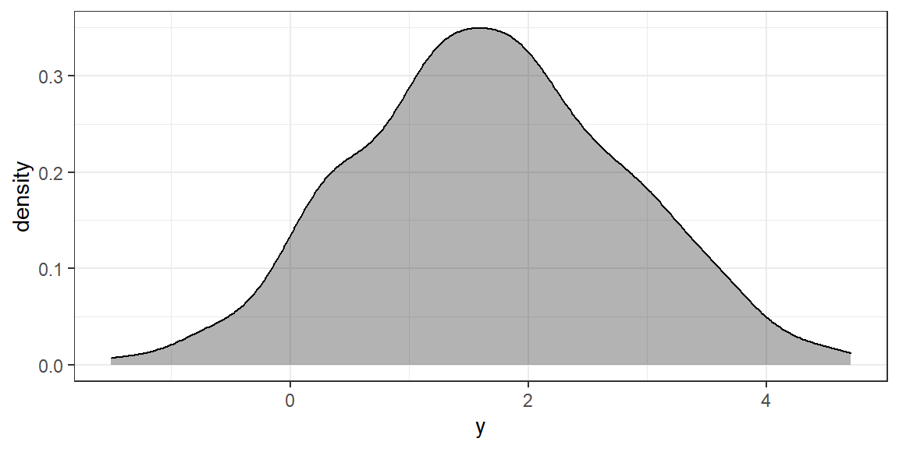
If we try to fit a GLM with a log link, there is an error.
glm <- glm(y ~ x, family = gaussian(link = "log"), data = data)Error in eval(family$initialize) : cannot find valid starting values: please specify some
This is because the domain of the natural logarithm only includes positive numbers, and we just tried to take the log of negative numbers.
Our initial reaction might be to add some constant to each \(Y\), say 10, for instance, so that they are all positive. This does produce a model which is a good fit.
glm <- glm(y + 10 ~ x, family = gaussian(link = "log"), data = data)
summary(glm)##
## Call:
## glm(formula = y + 10 ~ x, family = gaussian(link = "log"), data = data)
##
## Deviance Residuals:
## Min 1Q Median 3Q Max
## -3.14633 -0.63601 -0.01264 0.70930 2.87307
##
## Coefficients:
## Estimate Std. Error t value Pr(>|t|)
## (Intercept) 2.386801 0.007862 303.58 <2e-16 ***
## x 0.138190 0.012846 10.76 <2e-16 ***
## ---
## Signif. codes: 0 '***' 0.001 '**' 0.01 '*' 0.05 '.' 0.1 ' ' 1
##
## (Dispersion parameter for gaussian family taken to be 1.017812)
##
## Null deviance: 624.76 on 499 degrees of freedom
## Residual deviance: 506.87 on 498 degrees of freedom
## AIC: 1431.8
##
## Number of Fisher Scoring iterations: 4par(mfrow = c(2,2))
plot(glm, cex = 0.4)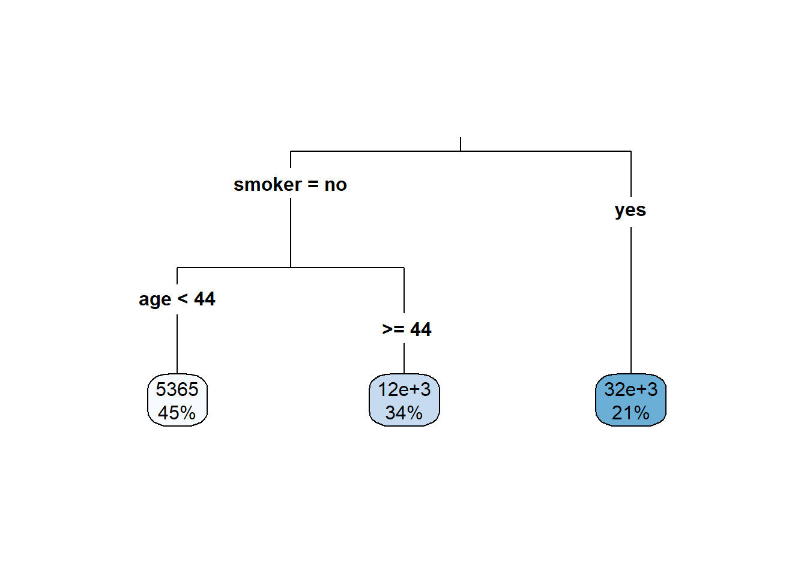
We see that on average, the predictions are 10 higher than the target. This is no surprise since \(E[Y + 10] = E[Y] + 10\).
y <- data$y
y_hat <- predict(glm, type = "response")
mean(y_hat) - mean(y)## [1] 9.999967However, we see that the actual predictions are bad. If we were to look at the R-squared, MAE, RMSE, or any other metric, it would tell us the same story. This is because our GLM assumption not that \(Y\) is related to the link function of \(X\), but that the mean of \(Y\) is.
tibble(y = y, y_hat = y_hat - 10) %>% ggplot(aes(y, y_hat)) + geom_point()
One solution is to adjust the \(X\) which the model is based on. Add a constant term to \(X\) so that the mean of \(Y\) is larger, and hence \(Y\) is non zero. While is a viable approach in the case of only one predictor variable, with more predictors this would not be easy to do.
data <- tibble(x = runif(500) + 10) %>%
mutate(y = x %>% map_dbl(sim_norm))
summary(data)## x y
## Min. :10.00 Min. :22040
## 1st Qu.:10.27 1st Qu.:28835
## Median :10.50 Median :36402
## Mean :10.50 Mean :37838
## 3rd Qu.:10.75 3rd Qu.:46688
## Max. :11.00 Max. :59756glm <- glm(y ~ x, family = gaussian(link = "log"), data = data)
par(mfrow = c(2,2))
plot(glm, cex = 0.4)
A better approach may be to use an inverse link even though the data was generated from a log link. This is a good illustration of the saying “all models are wrong, but some are useful” in that the statistical assumption of the model is not correct but the model still works.
data <- tibble(x = runif(500)) %>%
mutate(y = x %>% map_dbl(sim_norm))
glm <- glm(y ~ x, family = gaussian(link = "inverse"), data = data)
par(mfrow = c(2,2))
plot(glm, cex = 0.4)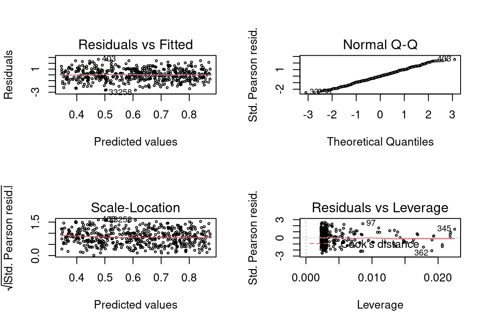
summary(glm)##
## Call:
## glm(formula = y ~ x, family = gaussian(link = "inverse"), data = data)
##
## Deviance Residuals:
## Min 1Q Median 3Q Max
## -2.63660 -0.71949 -0.02573 0.70123 2.68053
##
## Coefficients:
## Estimate Std. Error t value Pr(>|t|)
## (Intercept) 0.87559 0.04503 19.44 <2e-16 ***
## x -0.53090 0.05703 -9.31 <2e-16 ***
## ---
## Signif. codes: 0 '***' 0.001 '**' 0.01 '*' 0.05 '.' 0.1 ' ' 1
##
## (Dispersion parameter for gaussian family taken to be 1.104314)
##
## Null deviance: 662.67 on 499 degrees of freedom
## Residual deviance: 549.95 on 498 degrees of freedom
## AIC: 1472.5
##
## Number of Fisher Scoring iterations: 612.9.5 Gamma Response with Log Link
The gamma distribution with rate parameter \(\alpha\) and scale parameter \(\theta\) is density.
\[f(y) = \frac{(y/\theta)^\alpha}{x \Gamma(\alpha)}e^{-x/\theta}\]
The mean is \(\alpha\theta\).
Let’s use a gamma with shape 2 and scale 0.5, which has mean 1.
gammas <- rgamma(500, shape=2, scale = 0.5)
mean(gammas)## [1] 1.018104We then generate random gamma values. Because the mean now depends on two parameters instead of one, which was just \(\mu\) in the Gaussian case, we need to use a slightly different approach to simulate the random values. The link function here is seen in exp(x).
#random component
x <- runif(1000, min=0, max=100)
#relate Y to X with a log link function
y <- gammas*exp(x)
data <- tibble(x = x, y = y)
summary(data)## x y
## Min. : 0.1447 Min. :0.000e+00
## 1st Qu.:25.0189 1st Qu.:4.231e+10
## Median :49.2899 Median :1.476e+21
## Mean :50.0386 Mean :2.544e+41
## 3rd Qu.:76.4823 3rd Qu.:8.476e+32
## Max. :99.8365 Max. :2.595e+43As expected, the residual plots are all perfect because the model is perfect.
glm <- glm(y ~ x, family = Gamma(link = "log"), data = data)
par(mfrow = c(2,2))
plot(glm, cex = 0.4)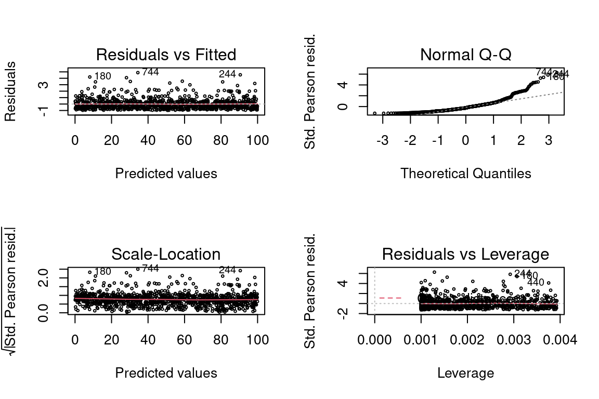
If we had tried using an inverse instead of the log, the residual plots would look much worse.
glm <- glm(y ~ x, family = Gamma(link = "inverse"), data = data)
par(mfrow = c(2,2))
plot(glm, cex = 0.4)## Warning in sqrt(crit * p * (1 - hh)/hh): NaNs produced
## Warning in sqrt(crit * p * (1 - hh)/hh): NaNs produced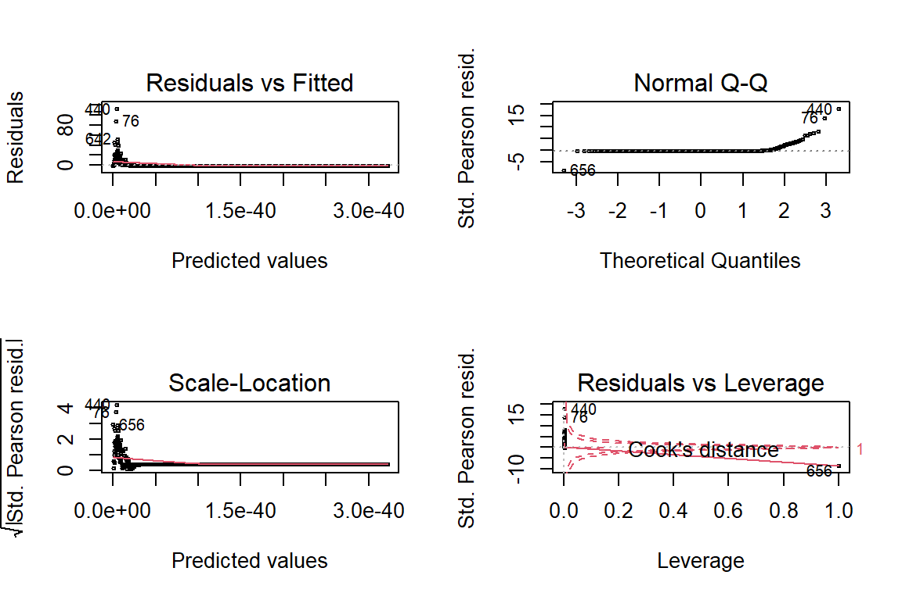
12.9.6 Gamma with Inverse Link
With the inverse link, the mean has a factor 1/(x + 1). Note that we need to add 1 to x to avoid dividing by zero.
#relate Y to X with a log link function
y <- gammas*1/(x + 1)
data <- tibble(x = x, y = y)
summary(data)## x y
## Min. : 0.1447 Min. :0.0005573
## 1st Qu.:25.0189 1st Qu.:0.0095364
## Median :49.2899 Median :0.0177203
## Mean :50.0386 Mean :0.0454184
## 3rd Qu.:76.4823 3rd Qu.:0.0383153
## Max. :99.8365 Max. :1.5248073glm <- glm(y ~ x, family = Gamma(link = "inverse"), data = data)
par(mfrow = c(2,2))
plot(glm, cex = 0.4)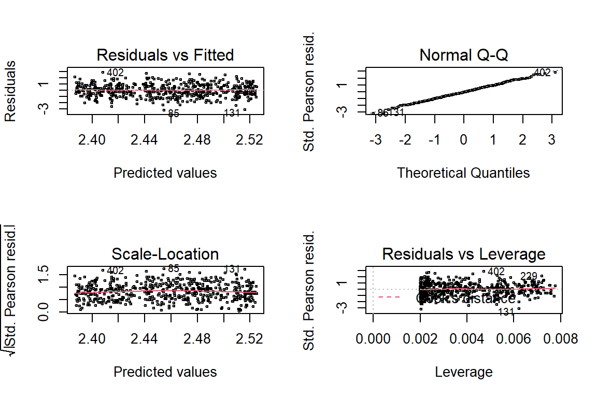